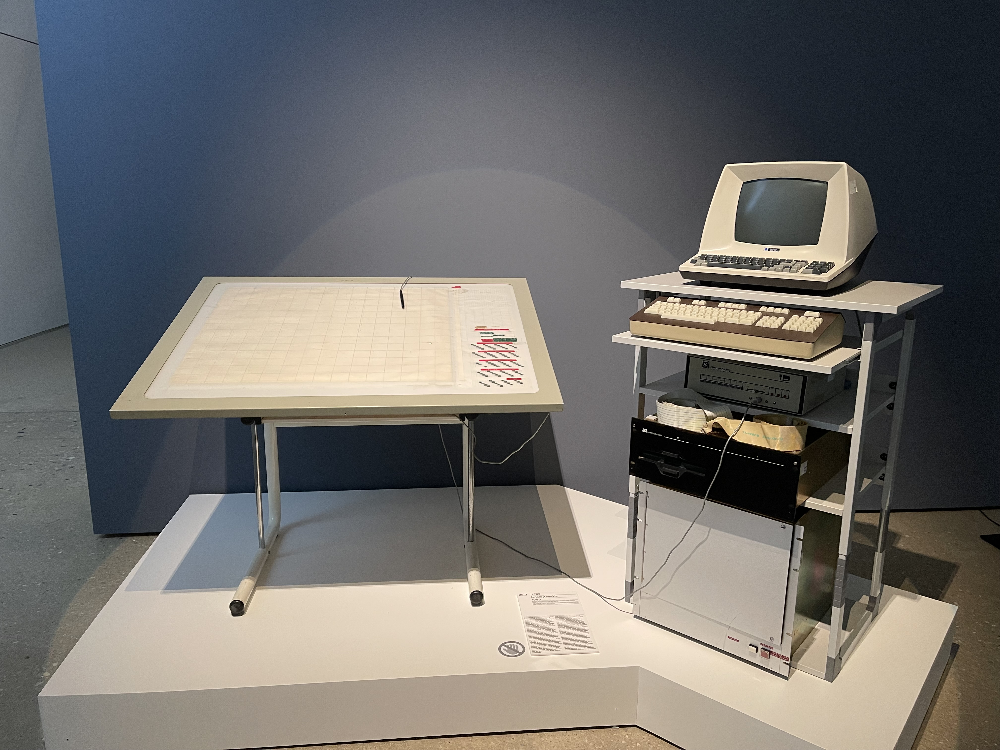
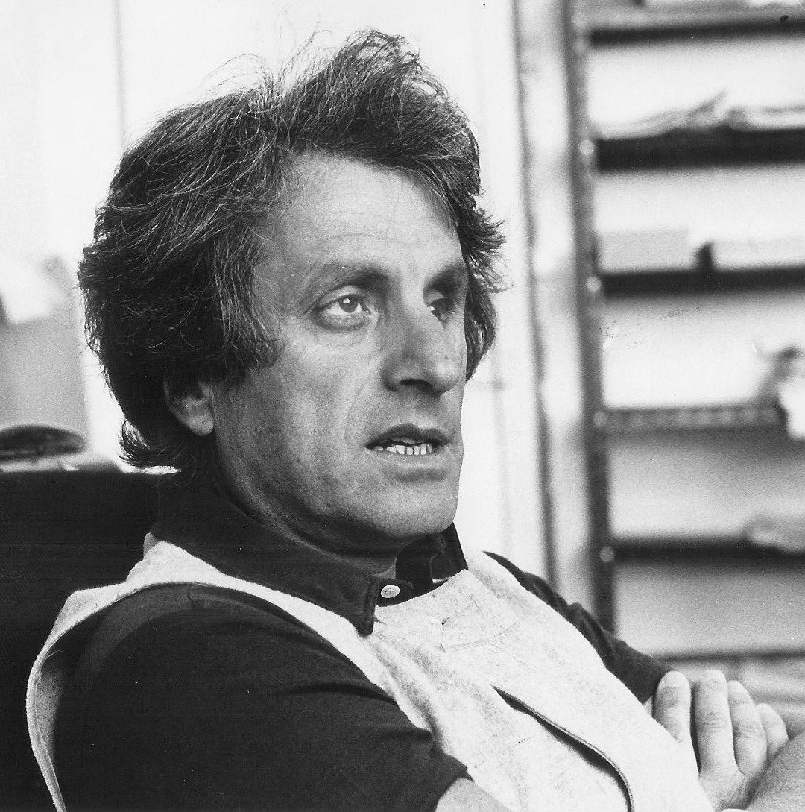

UPIC
Iannis Xenakis's drawing tablet that turned hand-drawn lines directly into synthesized sound.

Overview
The UPIC was a computerized music composition system that translated hand-drawn lines directly into synthesized sound, bypassing all traditional musical notation. Completed in 1977 at CEMAMu (Centre d'Études de Mathématique et Automatique Musicales) in Paris under the direction of composer-architect Iannis Xenakis, it consisted of a large electromagnetic drawing tablet connected to a Hewlett-Packard computer and a vector display.
The fundamental interaction was elegantly simple: the X-axis represented time, the Y-axis represented pitch. A composer drew on the tablet (or on paper that was then digitized), and the computer synthesized the corresponding sound. Three stages: draw a waveform (timbre), draw an amplitude envelope (dynamics), compose on the time/pitch grid. Horizontal lines meant sustained pitches, diagonals meant glissandi, curves meant accelerating pitch changes. A child could use it. Xenakis called the system 'polyagogic' — his coinage from the Greek for 'many expressions' — because it put every musical parameter (pitch, timbre, dynamics, duration, glissandi, transformation) under the direct control of the hand.
Deep dive
Xenakis was a trained civil engineer who worked for Le Corbusier's architectural studio for 12 years. He designed the Philips Pavilion for Expo 58 entirely by himself — a sculptural structure of hyperbolic paraboloids. The same mathematical surfaces appeared in his music: the string glissandi in Metastaseis (1953-54) were drawn as straight lines on a time-versus-pitch grid, creating the same shapes as the Pavilion's concrete walls. Xenakis had been sketching music since the 1950s. The UPIC gave those sketches a voice.
The UPIC workflow had three stages. Stage 1: draw a single-cycle waveform on the tablet — a sine wave, a sawtooth, a complex squiggle — defining the timbre. Stage 2: draw an amplitude envelope showing how loudness changes over time. Stage 3: on the main composition page (X=time, Y=pitch), draw pitch trajectories and assign saved waveforms/envelopes. The system rendered the sound. Real-time performance was also possible: moving the stylus across the tablet in real time. The entire original software was famously under one megabyte in size.
Xenakis designed UPIC to be usable by anyone, including children with no musical training. He wrote: 'Anybody, even myself or you, or children, can draw lines or graphics with an electromagnetic ballpoint, and they are transformed by computer directly into sound.' At KSYME, the Athens UPIC center founded in 1979, courses for up to 5,000 students aged 10-15 were announced in December 1986.
UPIC was the direct ancestor of graphical music creation tools. IanniX, an open-source graphical sequencer inspired by UPIC, is sponsored by the French Ministry of Culture. UPISketch, developed with the Centre Iannis Xenakis, runs on desktop and iOS. HighC continues the 'draw your music' tradition in education. The conceptual lineage extends to Max/MSP, MetaSynth, and image-to-sound software. Over 100 composers have created works with UPIC/UPIX, from Xenakis and Jean-Claude Risset to Aphex Twin.
Team & pioneers
- Iannis Xenakis. Romanian-born Greek-French composer, architect, and engineer. Founded CEMAMu (1966). Designed UPIC. Composed Mycènes Alpha (1978), first UPIC piece
- CEMAMu. Centre d'Études de Mathématique et Automatique Musicales, Paris. Founded by Xenakis with French Ministry of Culture support. Built the UPIC. Now Centre Iannis Xenakis at Université de Rouen
- KSYME. Greek UPIC center founded 1979 in Athens by Xenakis, John G. Papaioannou, and Stefanos Vassiliadis. Acquired its own UPIC system in 1986
Media

Sources
- Wikipedia — UPIC
- Centre Iannis Xenakis — UPIC Presentation, Technology, Composers
- Wikipedia — Iannis Xenakis
- ZKM — From Xenakis's UPIC to Graphic Notation Today (open access PDF)
- Mode Records — Xenakis, UPIC, Continuum (2-CD compilation, mode 98/99)
- Aphex Twin interview — Future Music (July 2006), via Music Thing blog
- IanniX — Open-source graphical sequencer inspired by UPIC